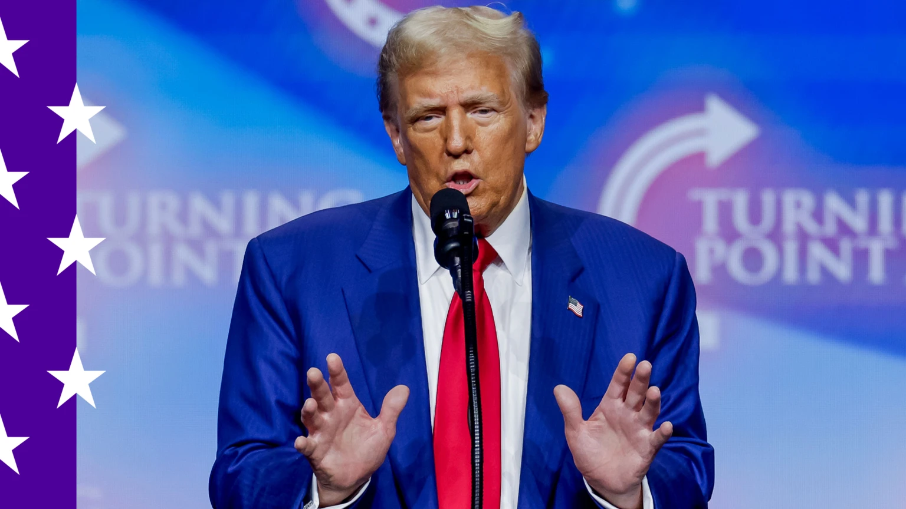

Bruce Springsteen to join Harris in Georgia as Trump heads to Las Vegas
El famoso músico Bruce Springsteen se unirá a la Vicepresidenta Kamala Harris en un evento en Georgia, mientras el ex presidente Donald Trump se dirige a Las Vegas. Este evento es parte de la creciente tensión en las próximas elecciones, donde ambos líderes han intercambiado palabras ásperas.
El evento de Harris busca movilizar a los votantes en un estado clave que podría determinar el resultado de la elección. Springsteen, conocido por su música y activismo político, está alineado con los esfuerzos de Harris para fortalecer el apoyo entre los votantes jóvenes y progresistas.
Contexto
Georgia ha sido un campo de batalla en las últimas elecciones, con ambos partidos luchando por asegurar la victoria. La participación de Springsteen puede atraer a un público más amplio, destacando temas como la justicia social y la igualdad.
Reacciones
Los analistas políticos han señalado que la alianza de Harris con figuras influyentes como Springsteen podría ser crucial. “Necesitan energizar a la base”, comentó un experto en campañas. Por otro lado, los seguidores de Trump han intensificado sus críticas hacia Harris y su agenda.
Próximos Pasos
A medida que se acercan las elecciones, tanto Harris como Trump continuarán intensificando sus campañas. Las siguientes semanas son críticas y los eventos en estados clave, como Georgia, serán seguidos de cerca.
← Volver a Noticias